~9 Vertex Groups~
11/2/2026
Making a Selection for the Vertex Group
Watch it- WATCH IT: When selecting vertices for a Vertex Group, it is easy to miss vertices in tight areas—especially between the fingers. After making your basic selection, use Ctrl & Numpad + to grow the selection outward. This can help pick up nearby vertices that are difficult to see or select individually. Rotate the model and check the selection from several angles before assigning it to the Vertex Group.
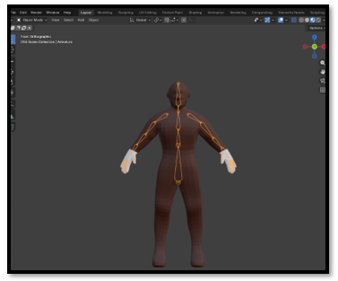
You must be in edit mode, or you cannot get to vertex groups
Select the group of vertices you want made a special group
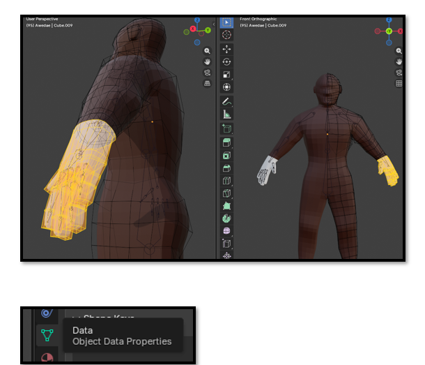
Now you want to hit the Assign button to assign the vertices to a group. And then name this group
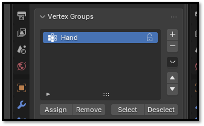
If you accidently unselect this group, you can select Hand from the Vertex group list, and then hit the Select button.
Assigning the Material
Now you can go to the Material tab, and assign the color to the hand
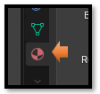
Select the Mahogany Skin Color and then hit the button that says Assign.
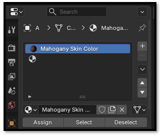
Go to Object mode and turn on the Material Mode at the top to test.
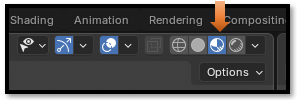
Looks like the inside of the fingers were missed
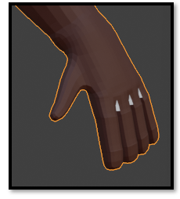
If you needed to subtract vertices, you would first have to hit the remove button and start all over. But here we only need to add to the group.
So, add the vertices in between the fingers (that were missed) to this newly named Vertex group and hit the name in the list to select here. Here we only have one group, so it will be easy to find. Then hit select and all of the vertices that we all ready assigned should light up.
Watch it- if the vertex selection is really messed up, you might have to select the vertex group, then hit the remove button first. This will remove all of the vertices. Then you will have to select the vertices again that you want in the group again and hit the Assign button.
Here we went to wire mode, so we can see the lines better in the hand that we missed. Just select those black lines you find and hit the assign butt again in the Vertex group panel. Make sure you test it first by Hitting deselect and reselecting again. It should pick up everything and the hand should be completely yellow highlight now.
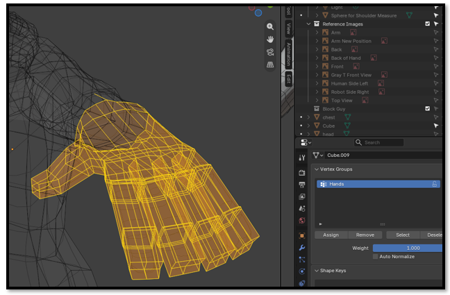
Now if you test in Object mode, you will find that the color is not applied to this area. That is because we actually need to go back to the material tab and reapply the material to the hands.
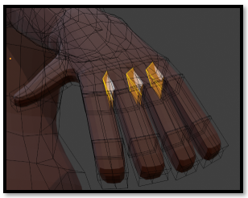
Make sure that you select the entire hand in Edit mode again.
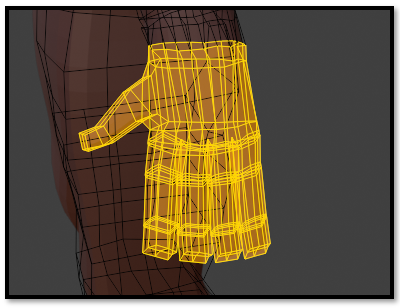
Now you can go to the Material tab, and assign the color to the hand. Just follow the steps above to assign the material again.
And now the hand is complete. Missing inner fingers and all.
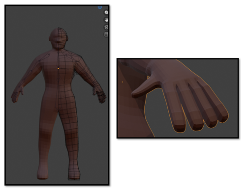
What The Panel Bottom Buttons Mean
Well, we have already used most of them, but this is what they mean.
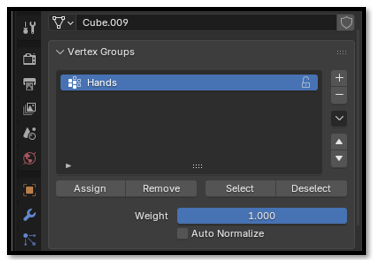
Assign – Will Assign the vertices that you have selected
Remove – Must be used to remove the entire group of vertices, before changing the selection
Select – This will select your vertices
Deselect – Will deselect your vertices.
Watch It – It is easy to accidentally click Select instead of Assign. Remember, selecting vertices only highlights them. They are not part of the vertex group until you click Assign.